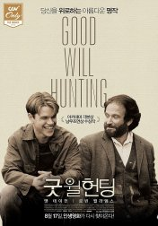

| 1 |
이태원 클라쓰 |
|
각자의 가치관이 어우러지는 이 곳, '이태원'. 이 거리를 살아가는
그들의 이야기
|
클릭
|
| 2 |
어바웃 타임 |
|
평범한 청년이 알게 된 가문의 놀라운 비밀. 그건 바로 집안의
남자들에게 시간을 되돌리는 능력이 있다는 것. 청년은 첫눈에 반한
여인의 마음을 얻기 위해 그 특별한 능력을 사용하기로 한다. 그리고
그녀와의 꿈 같은 시간이 시작된다.
|
클릭
|
| 3 |
소셜 네트워크 |
|
5억 명의 ‘친구’가 생긴 순간 진짜 친구들은 적이 되었다! 2003년
가을, 하버드대의 컴퓨터 천재 ‘마크’는 비밀 엘리트 클럽의
윈클보스 형제에게 하버드 선남선녀들만 교류할 수 있는 ‘하버드
커넥션’ 사이트 제작을 의뢰 받는다. 하지만 여기서 획기적인
아이디어를 생각해낸 ‘마크’는 인맥 교류 사이트 ‘페이스북’을 개발,
절친 ‘왈도’의 도움으로 사이트를 오픈한다. ‘페이스북’은 순식간에
모두의 마음을 사로잡고, 유명한 냅스터의 창시자 ‘숀’의 참여로
전세계로 번지면서 ‘마크’는 기업가치 58조원, 전세계 최연소
억만장자가 된다. 하지만 그 순간 윈클보스 형제는 물론 ‘왈도’마저
전대미문의 소송을 제기하면서 하버드 천재들간의 치열한 아이디어
전쟁이 시작되는데…
|
클릭
|
| 4 |
머니볼 |
|
메이저리그 만년 최하위에 그나마 실력 있는 선수들은 다른 구단에
뺏기기 일수인 ‘오클랜드 애슬레틱스’. 돈 없고 실력 없는 오합지졸
구단이란 오명을 벗어 던지고 싶은 단장 ‘빌리 빈(브래드 피트)’은
경제학을 전공한 ‘피터’를 영입, 기존의 선수 선발 방식과는 전혀
다른 파격적인 ‘머니볼’ 이론을 따라 새로운 도전을 시작한다. 그는
경기 데이터에만 의존해 사생활 문란, 잦은 부상, 최고령 등의
이유로 다른 구단에서 외면 받던 선수들을 팀에 합류시키고, 모두가
미친 짓이라며 그를 비난한다. 과연 빌리와 애슬레틱스 팀은
‘머니볼’의 기적을 이룰 수 있을까?
|
클릭
|
| 5 |
굿 윌 헌팅 |
 |
윌 헌팅(Will Hunting: 매트 데이몬 분)은 20년을 살아오면서 누구의
간섭도 받아본 적이 없었다. 그러한 그도 결코 우습게 상대하지 못할
인생의 스승을 만나게 된다. 보스톤 남쪽의 빈민 거주지역에서 살고
있는 노동자계층의 친구들과 마찬가지로 윌은 비천한 일을 살며
산다. 윌은 MIT 공대에서 교실 바닥 청소 일을 할 때 말곤 대학교
정문 근처에도 가본 적이 없다. 그러나 노벨상을 수상한 교수들조차
혀를 내두를 만큼 어려운 문제들을 싱거울 정도로 간단하게
풀어버린다. 그러나 그토록 머리가 비상한 윌도 어쩌지 못 하는 게
한 가지 있다. 폭행죄로 재판을 받게된 윌은 수감될 위기에서 벗어날
수가 없다. 윌의 유일한 희망은 심리한 교수인 숀 맥과이어(Sean
McGuire: 로빈 윌리암스)이다. 숀은 윌이 가진 내면의 아픔에 깊은
애정을 갖고 관찰하면서 윌에게 인생과 투쟁하기 위해 필요한 지혜를
가르쳐 준다.
|
클릭
|